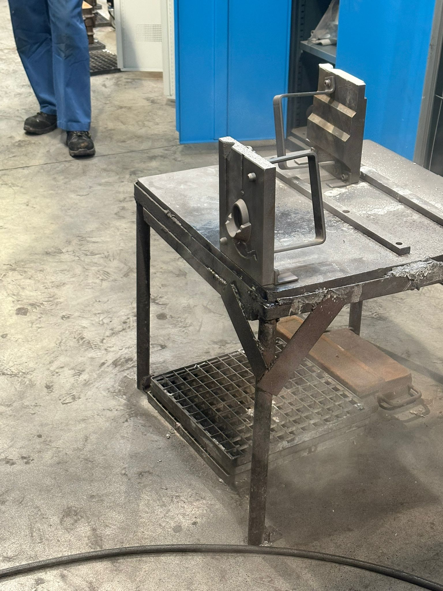
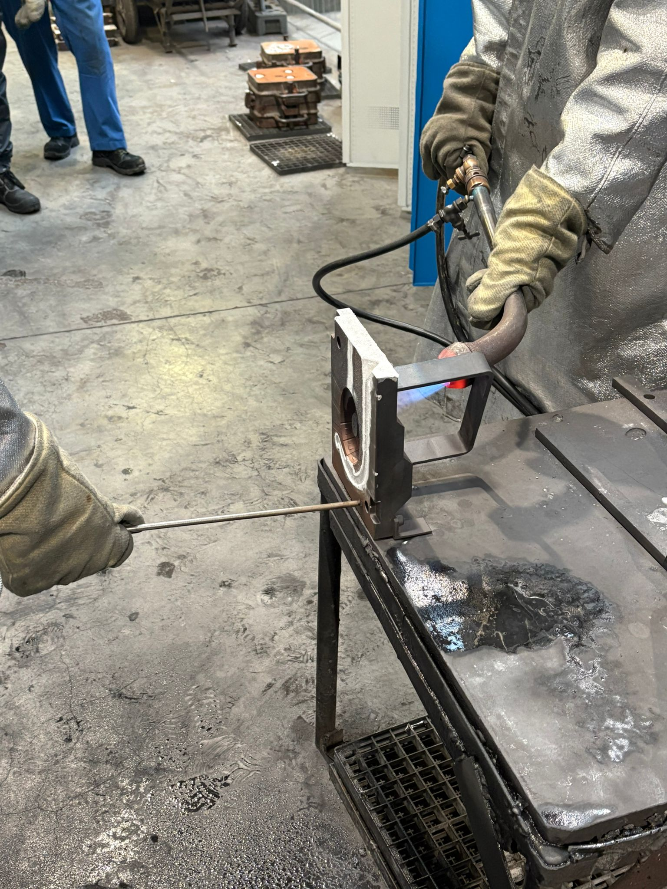
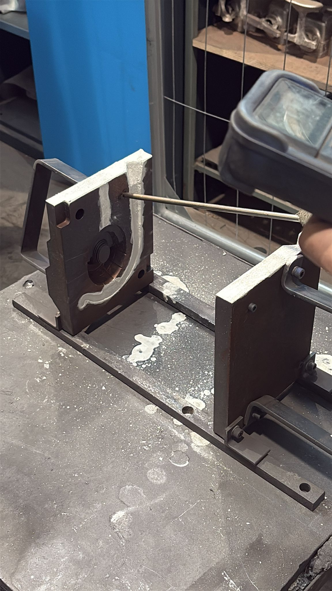
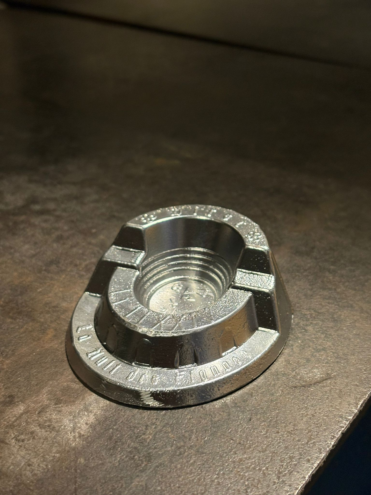
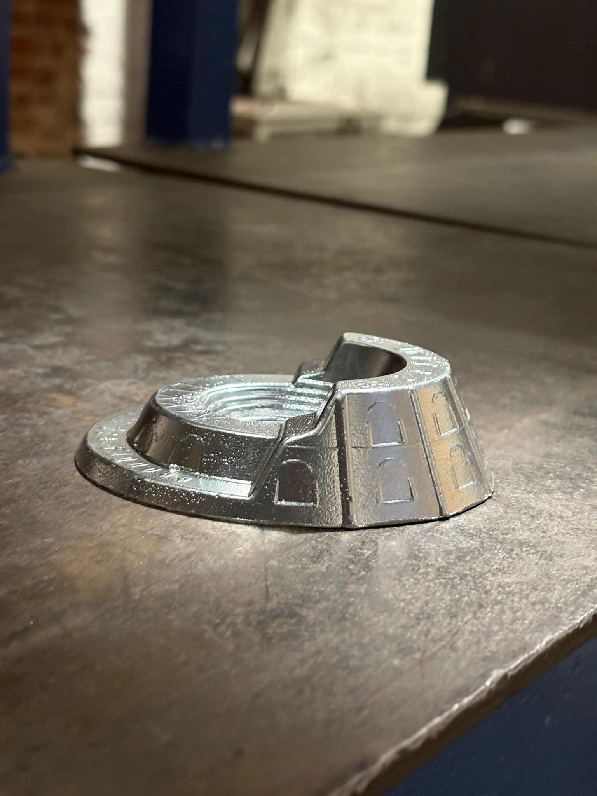
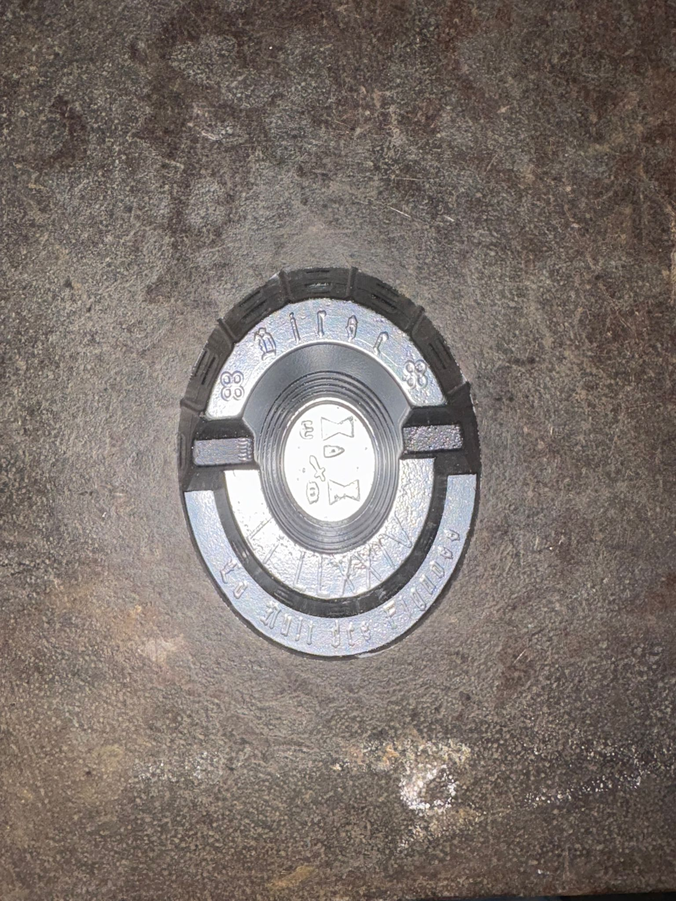
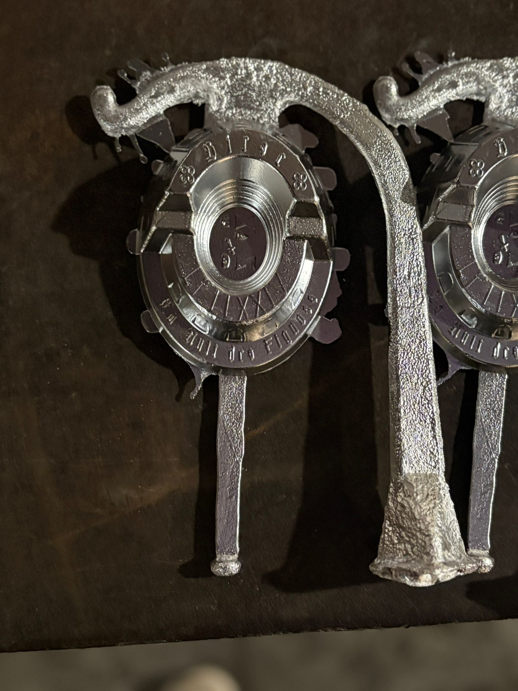

Art Foundry: Casting an Aluminum Ashtray
Mastering the art of metal casting: mold preparation, thermal management, and precision finishing.
1. Mold Preparation & Coating Strategy
The success of a high-quality casting relies heavily on mold preparation. This project involved casting an aluminum ashtray ("La Nuit des Fignoss") using a permanent metallic mold (gravity die casting).
Surface Treatment:
• White Coating (Insulating): Applied to specific areas (runners and risers) to slow down cooling and prevent premature solidification, ensuring the mold fills completely.
• Black Coating (Conductive - Graphite): Applied to the cavity walls to promote heat transfer, improve surface finish, and facilitate part release.
Before casting, the mold must be preheated to a specific temperature range (approx. 300-350°C) to avoid thermal shock and defects like misruns. We monitored the temperature precisely using a contact thermocouple.



(Aluminum Pouring Process)
2. The Pouring Process
Once the mold reached the optimal thermal state, we proceeded with the pouring of molten aluminum alloy (Al-Si based).
Key parameters controlled:
• Pouring Temperature: Maintained around 720°C to ensure fluidity.
• Pouring Rate: Steady and continuous flow to avoid turbulence and air entrapment (porosity).
• Safety: Strict adherence to PPE protocols (aluminized suit, face shield, gloves) due to the high risks involved.
The video demonstrates the manual pouring technique, requiring skill and coordination to fill the mold correctly without splashing or interruptions.
3. Demolding & Finishing
After solidification, the part is extracted from the mold. The initial result includes the casting system (sprue, runner, gates) and risers, which must be removed.
Post-Processing:
• Fettling: Cutting off the feeding system and grinding flash lines.
• Surface Finishing: Polishing to achieve the final aesthetic quality.
The final ashtray showcases sharp details ("La Nuit des Fignoss", numerals) and a smooth surface finish, validating the effectiveness of the mold preparation and coating strategy.



